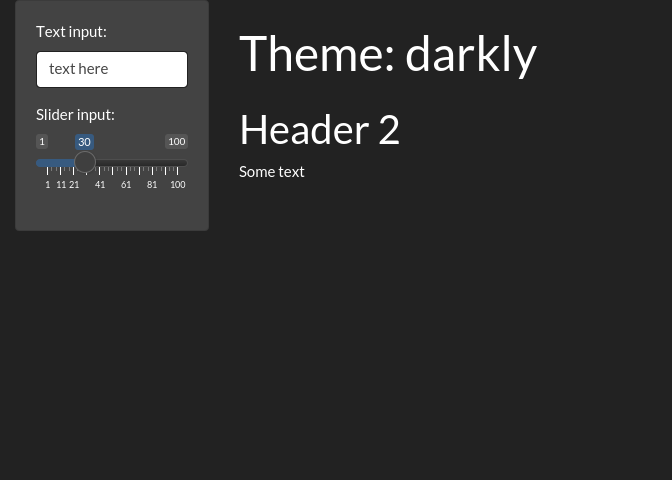

Chapter 6 Layout, themes, HTML
6.1 Single page layouts
6.1.1 Exercises
6.1.1.1 Ex 1
using sidebarLayout
library(shiny)
ui <- fluidPage(
sidebarLayout(
sidebarPanel(textInput('t1','Please enter your name:')),
mainPanel(textOutput('to1'))
)
)
server <- function(input, output, session) {
}
shinyApp(ui, server)using fluidRow
library(shiny)
ui <- fluidPage(
fluidRow(
column(4, textInput('t1', 'Please enter your name:')),
column(8, textOutput('to1'))
)
)
server <- function(input, output, session) {
}
shinyApp(ui, server)6.1.1.2 Ex 2
library(shiny)
ui <- fluidPage(
titlePanel("Central limit theorem"),
sidebarLayout(
sidebarPanel(
numericInput("m", "Number of samples:", 2, min = 1, max = 100)
),
mainPanel(
plotOutput("hist")
),
position = 'right'
)
)
server <- function(input, output, session) {
output$hist <- renderPlot({
means <- replicate(1e4, mean(runif(input$m)))
hist(means, breaks = 20)
}, res = 96)
}
shinyApp(ui, server)6.1.1.3 Ex 3
library(shiny)
ui <- fluidPage(
fluidRow(
column(6, plotOutput('p1')),
column(6, plotOutput('p2'))
),
fluidRow(
textInput('t1', 'Please enter the title:', width = '100%')
)
)
server <- function(input, output, session) {
output$p1 <- renderPlot({
plot(cars)
})
output$p2 <- renderPlot({
plot(mtcars)
})
}
shinyApp(ui, server)6.2 Multi-page layouts
6.2.1 tabsetPanel
library(shiny)
ui <- fluidPage(
sidebarLayout(
sidebarPanel(
textOutput("panel")
),
mainPanel(
tabsetPanel(
id = "tabset",
tabPanel("panel 1", "one"),
tabPanel("panel 2", "two"),
tabPanel("panel 3", "three")
)
)
)
)
server <- function(input, output, session) {
output$panel <- renderText({
paste("Current panel: ", input$tabset)
})
}
shinyApp(ui, server)6.4 Themes
library(shiny)
library(bslib)##
## Attaching package: 'bslib'## The following object is masked from 'package:utils':
##
## pageui <- fluidPage(
theme = bslib::bs_theme(bootswatch = "darkly"),
sidebarLayout(
sidebarPanel(
textInput("txt", "Text input:", "text here"),
sliderInput("slider", "Slider input:", 1, 100, 30)
),
mainPanel(
h1(paste0("Theme: darkly")),
h2("Header 2"),
p("Some text")
)
)
)
server <- function(input, output, session) {
}
shinyApp(ui, server)##
## Listening on http://127.0.0.1:6232